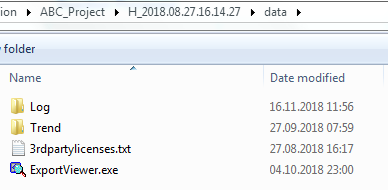
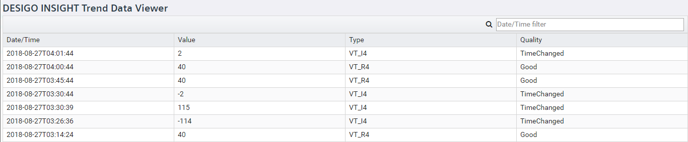

Display Desigo Insight Trend Data
Scenario: Desigo Insight trend data must be checked prior to migration.
Requirements:
- The Desigo Insight migration package is on the computer.
Steps:
- In Windows Explorer, go to the Desigo Insight migration files.

- Select Data.
- Double-click file ExportViewer.exe.
- The Desigo Insight Export Viewer opens.
- Select Trend Data.
- Select the appropriate trend.
- All data on this trend displays.

- Use the Date/Time filter to reduce the data display. The entry format is the same the syntax for column Date/Time, for example: 2018-10-25T10:13:00.
- Data prior to and including the entered date is displayed.